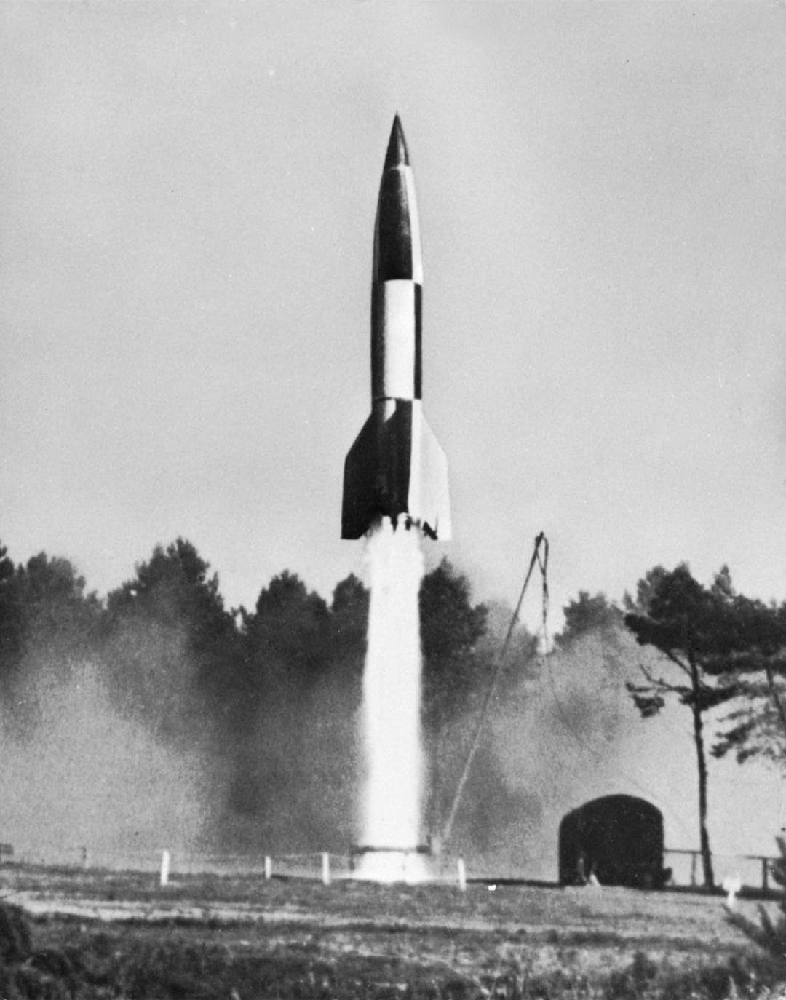
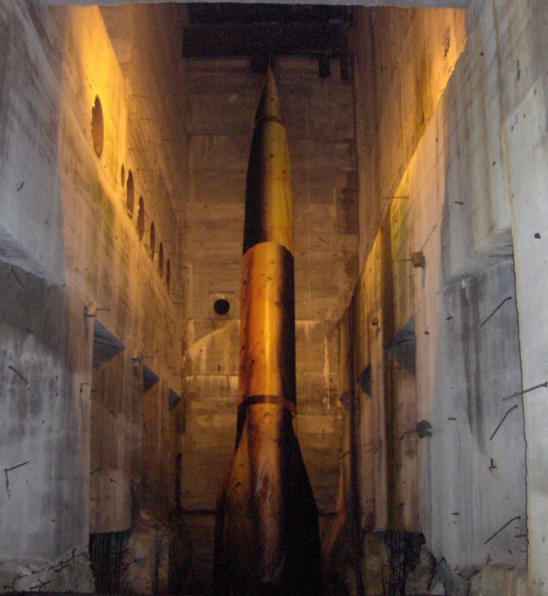

Le V2 (Vergeltungswaffe 2 – « arme de représailles n°2 ») est la première fusée balistique de l’histoire. Conçu par les ingénieurs allemands sous la direction de Wernher von Braun, il représente une avancée technologique majeure, mais aussi l’une des armes les plus meurtrières et les plus symboliques de la guerre totale menée par le régime nazi.
Nom : A4 / V2
Type : Fusée balistique à carburant liquide
Longueur : 14 mètres
Poids : 12,5 tonnes
Vitesse : 5 760 km/h
Portée : 320 km
Charge : 1 tonne d’amatol
Le V2 est développé à Peenemünde, sur la côte baltique. Ce centre de recherche ultramoderne réunit ingénieurs, techniciens et militaires autour d’un objectif : créer une arme révolutionnaire capable de frapper l’ennemi à longue distance.

Après le bombardement de Peenemünde en 1943, la production du V2 est transférée dans le complexe souterrain de Dora-Mittelbau. Les déportés y travaillent dans des tunnels sans lumière, sans air, dans la faim et la violence.
À partir de septembre 1944, les V2 sont tirés depuis les Pays-Bas, la Belgique et le Nord de la France. Les principales cibles sont Londres, Anvers et Liège.
En 1945, les Alliés capturent les ingénieurs allemands et les fusées restantes. Le V2 devient la base des programmes spatiaux américains et soviétiques.